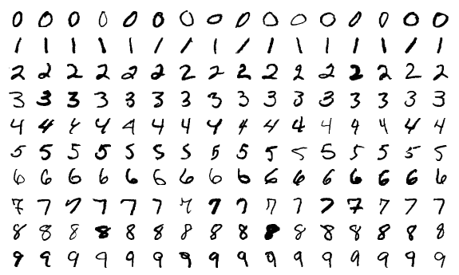

Hand-drawn digit recognizer
Draw a number from 0 to 9!
Details
This is a trained neural network recognizing your hand-writing. Draw a number between 0 and 9 and see if the network guessed it right!
In the background there is a neural network that was trained on the MNIST dataset. The dataset consists of 60 000 + 10 000 images of hand-written numbers. All images have a size of 28x28 pixels, and an associated label that tells which number is supposed to be drawn on the image.
The MNIST dataset contains the images pre-processed, so that each image is centered inside the 28x28 pixel region using its center of mass. To make sure that the network receives similiar inputs that it has learned on, your input is also centered using your drawings center of mass:
-
In this demo app there are actually 4 networks that were trained using this dataset, and once you draw a number all of them will take a vote. The number that most of the networks voted for gets picked as the result. You can see the result of the last voting here:
-
Loading networks...